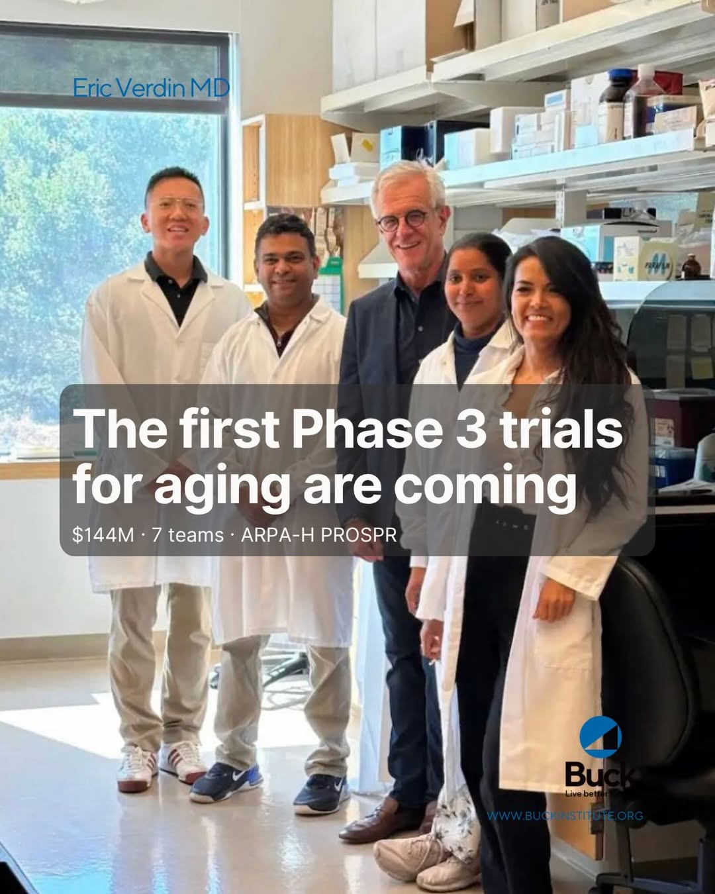

The first phase 3 trials for human aging are coming.
They will test 3 drugs to see if they slow the aging process in older humans:
Rapamycin
SGLT-2 inhibitor
Semaglutide
As a reminder, the single biggest risk factor for CVD is age. It is over 10x larger than almost every other risk factor.
#prosprHD #agingHD #longevityHD #rapamycinHD #sglt2HD #semaglutideHD #glp1HD
The US government just made its biggest bet on aging science.
Last month, ARPA-H awarded $144 million to seven teams to lay the groundwork for the first serious phase 3 clinical trials of aging interventions in humans.
The program is called PROSPR. Proactive Solutions for Prolonging Resilience.
The core problem in aging research has never been a shortage of promising biology. It has been the absence of a validated biomarker that regulators will accept as a clinical endpoint.
You cannot run a trial to prove a drug extends human lifespan. It would take decades and cost billions. What the field has needed for a long time is the equivalent of what blood pressure became for cardiovascular medicine: a measurable, modifiable surrogate that predicts outcomes and responds to intervention.
PROSPR is funding the work to find that marker.
One of the seven funded teams includes researchers from the Buck Institute for Research on Aging, led by John Newman and Brianna Stubbs alongside colleagues from Stanford and Harvard, working to develop a composite aging score built from large health datasets and wearable monitoring that can forecast outcomes over a 20 year horizon.
Other teams will mine existing trial data from metformin, rapamycin, and calorie restriction to identify biomarkers that signal slowed aging, and run a phase 3 trial of rapamycin, an SGLT-2 inhibitor, and semaglutide in healthy adults in their 60s to test whether these drugs inhibit age-related functional decline.
As Steve Austad put it, this is the first serious effort to move our successes with experimental animals into humans.
The longevity landscape will look substantially different in five years because of this program.
For ongoing updates on how aging science is translating into human benefit, follow me at Eric Verdin and the @buckinstituteforaging
